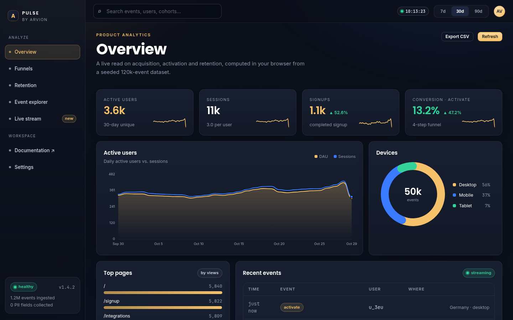

Product sample · Analytics
Pulse
A self-hosted product-analytics app: 120,000 seeded events, ordered funnels, weekly retention cohorts, breakdowns and a live stream, all computed in the browser from the same modules the tests import.
120kevents
4,000users
15tests
0deps

The problem
Dashboards that lie politely.
Most analytics demos ship hard-coded numbers. The parts that actually matter are the definitions: is a funnel ordered? Does a repeated step count twice? What happens to a retention cell you cannot observe yet?
Pulse exists to make those definitions inspectable: every number on screen is computed from the event log by code you can read and test.
What we built
Definitions first, charts second.
- Ordered, first-touch funnels with a conversion window and drop-off breakdowns by device.
- Weekly cohorts by signup week with unobservable cells kept null, not zero.
- Equal-length period deltas, percentiles, moving averages and anomaly detection.
- A seeded generator (mulberry32) so screenshots, tests and README numbers stay in sync.
Architecture
How it is put together
demo/ app (static) ── imports ──► src/analytics.js
└► src/dataset.js (120k seeded events)
test/ node:test ── imports the same two modules
no build step · no dependencies · runs on GitHub Pages
Stack
TypeScriptVanilla JSSVG
Security and money
- Funnel anchors on the first occurrence of step 0; later steps must follow it inside the window.
- Retention returns null for weeks that have not happened yet.
- Deltas compare equal adjacent windows so month length cannot fake growth.
- The dataset is deterministic, so the numbers in the README are reproducible.
Screens
Product surfaces
Similar work
Building something in this category?
We can walk you through the architecture, the payment integration and the failure cases on a call, including the parts that were hard.